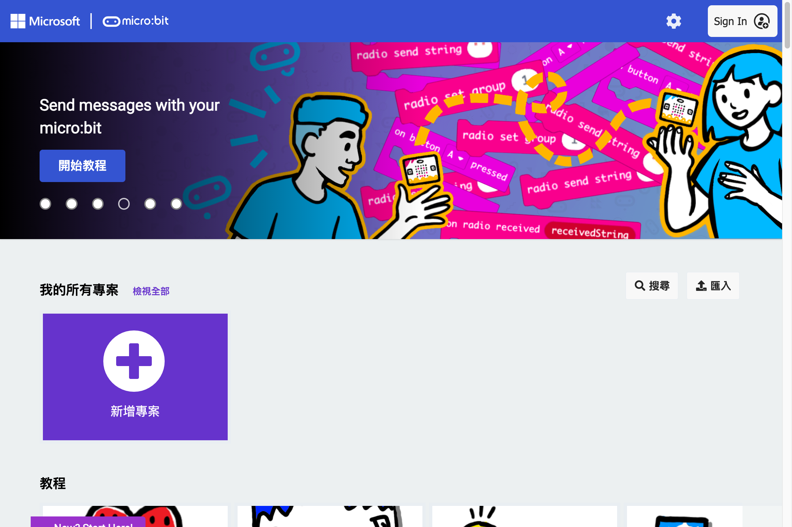
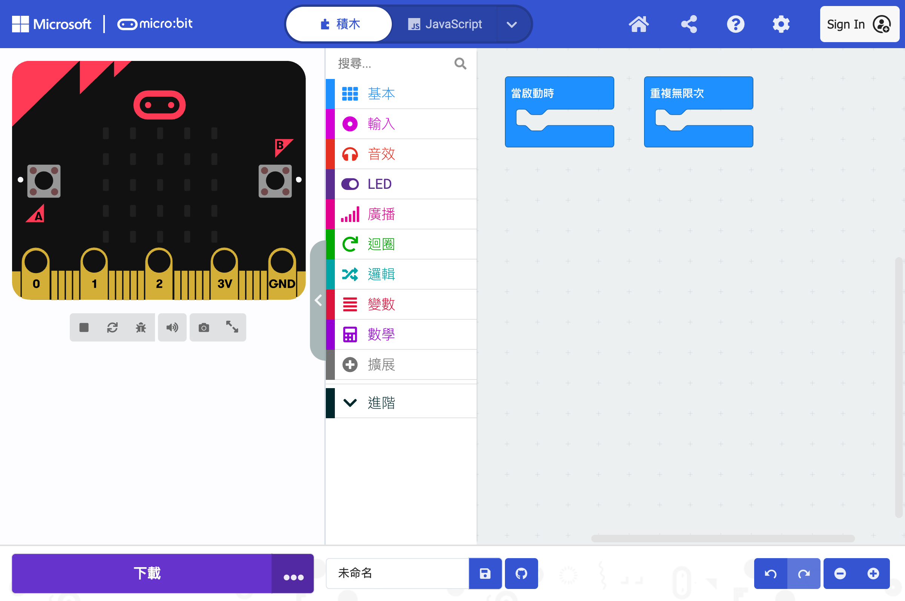
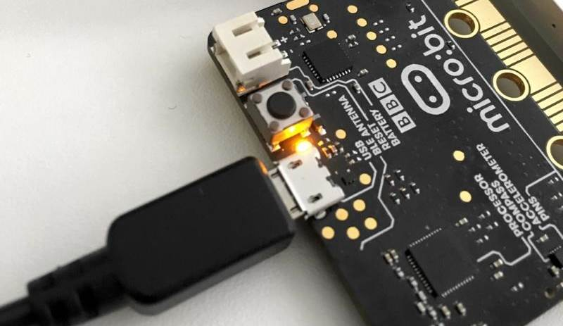
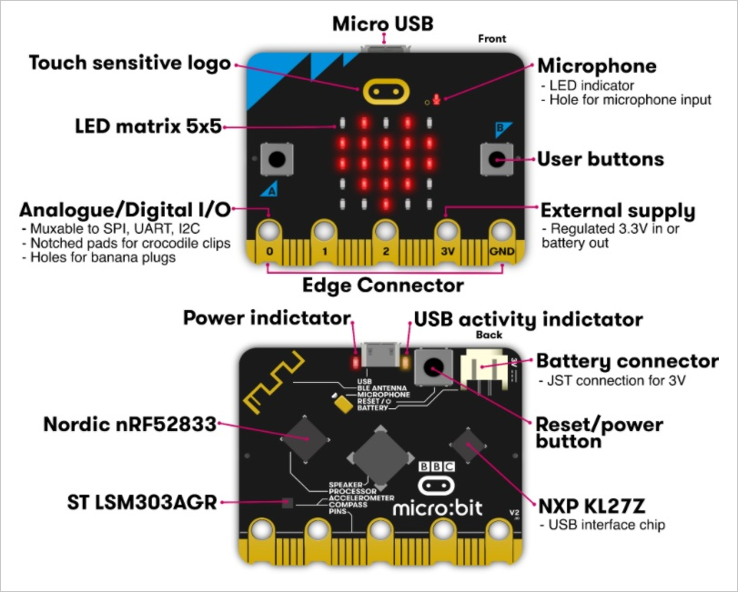
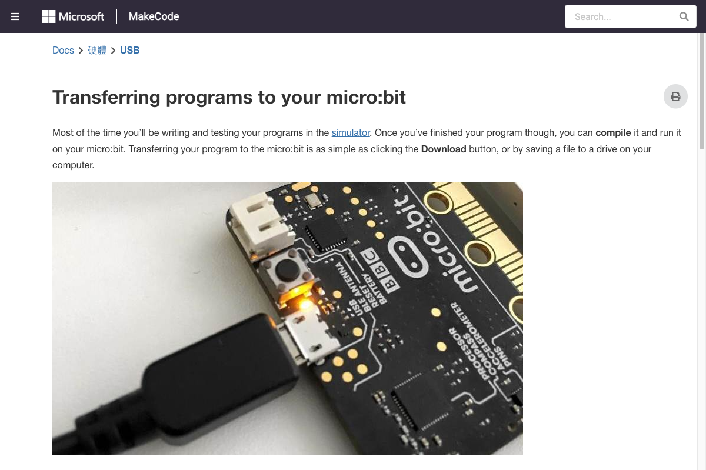

MakeCode 編輯器導覽、專案管理、下載燒錄、模擬器使用
Microsoft MakeCode 是一個免費的線上程式編輯器，專為 Micro:bit 設計。它支援三種程式模式：
| 模式 | 說明 | 適合對象 |
|---|---|---|
| 積木（Blocks） | 視覺化拖曳積木，類似 Scratch | 初學者、小學生 |
| JavaScript | 文字程式碼，使用 Static TypeScript | 有程式基礎者 |
| Python | 文字程式碼，使用 MakeCode Python | 想學 Python 者 |
開啟 makecode.microbit.org，你會看到以下介面：
| 區域 | 功能 |
|---|---|
| 積木區（左側） | 所有可用的積木分類，拖曳到工作區使用 |
| 工作區（中間） | 撰寫程式的區域，將積木拖曳到這裡組合 |
| 模擬器（左側） | 即時模擬 Micro:bit 執行結果 |
| 工具列（上方） | 專案名稱、下載、設定、分享 |
| 積木搜尋（右上） | 搜尋特定積木名稱 |

MakeCode 首頁

編輯器介面
編輯完程式後，需要將程式下載並燒錄到 Micro:bit 板子上才能實際運行。以下是完整步驟：
MakeCode 編輯器右下角的紫色「下載」按鈕（紅色框標示處）
.hex 檔案
用 USB 線將 Micro:bit 連接到電腦

Micro:bit v2 板子外觀（正面）
MICROBIT 的可卸除式磁碟.hex 檔案拖曳到 MICROBIT 磁碟中
MakeCode 官方說明：如何將程式傳輸到 Micro:bit
MakeCode 內建模擬器，可以在不連接硬體的情況下測試程式：
| 功能 | 操作 |
|---|---|
| 自動執行 | 積木改動後，模擬器會自動重新執行 |
| 暫停/繼續 | 點擊模擬器上方的暫停按鈕 |
| 重啟 | 點擊模擬器上方的重啟按鈕 |
| 虛擬按鈕 | 點擊模擬器上的 A/B 按鈕測試 |
| 虛擬晃動 | 點擊模擬器旁的晃動圖示 |